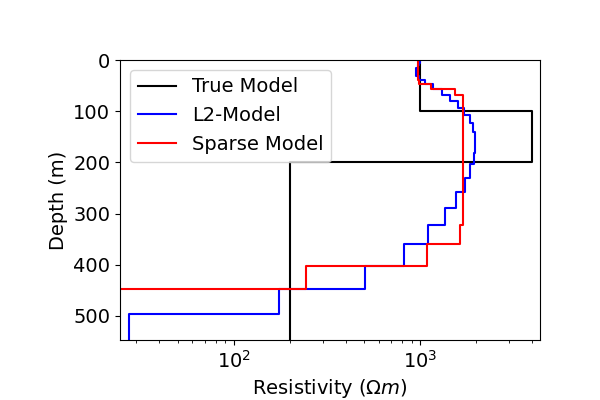
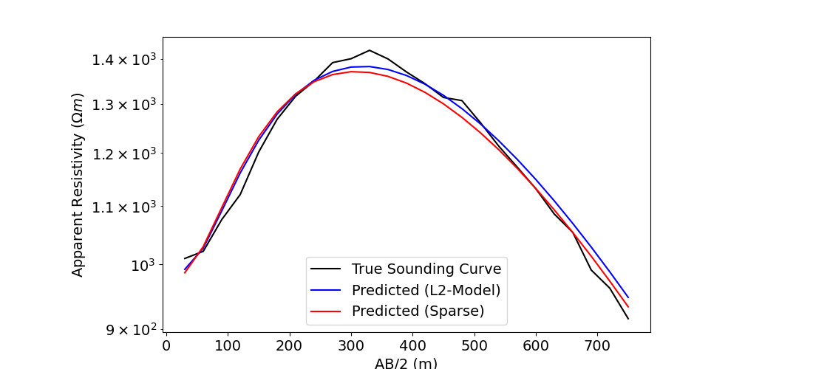

Note
Click here to download the full example code
Sparse 1D Inversion of Sounding Data¶
Here we use the module SimPEG.electromangetics.static.resistivity to invert DC resistivity sounding data and recover a 1D electrical resistivity model. In this tutorial, we focus on the following:
How to define sources and receivers from a survey file
How to define the survey
1D inversion of DC resistivity data with iteratively re-weighted least-squares
For this tutorial, we will invert sounding data collected over a layered Earth using a Wenner array. The end product is layered Earth model which explains the data.
Import modules¶
import os
import numpy as np
import matplotlib as mpl
import matplotlib.pyplot as plt
import tarfile
from discretize import TensorMesh
from SimPEG import (
maps,
data,
data_misfit,
regularization,
optimization,
inverse_problem,
inversion,
directives,
utils,
)
from SimPEG.electromagnetics.static import resistivity as dc
from SimPEG.utils import plot_1d_layer_model
mpl.rcParams.update({"font.size": 16})
# sphinx_gallery_thumbnail_number = 2
Define File Names¶
Here we provide the file paths to assets we need to run the inversion. The Path to the true model is also provided for comparison with the inversion results. These files are stored as a tar-file on our google cloud bucket: “https://storage.googleapis.com/simpeg/doc-assets/dcr1d.tar.gz”
# storage bucket where we have the data
data_source = "https://storage.googleapis.com/simpeg/doc-assets/dcr1d.tar.gz"
# download the data
downloaded_data = utils.download(data_source, overwrite=True)
# unzip the tarfile
tar = tarfile.open(downloaded_data, "r")
tar.extractall()
tar.close()
# path to the directory containing our data
dir_path = downloaded_data.split(".")[0] + os.path.sep
# files to work with
data_filename = dir_path + "app_res_1d_data.dobs"
Out:
overwriting /Users/josephcapriotti/codes/simpeg/tutorials/05-dcr/dcr1d.tar.gz
Downloading https://storage.googleapis.com/simpeg/doc-assets/dcr1d.tar.gz
saved to: /Users/josephcapriotti/codes/simpeg/tutorials/05-dcr/dcr1d.tar.gz
Download completed!
Load Data, Define Survey and Plot¶
Here we load the observed data, define the DC survey geometry and plot the data values.
# Load data
dobs = np.loadtxt(str(data_filename))
# Extract source and receiver electrode locations and the observed data
A_electrodes = dobs[:, 0:3]
B_electrodes = dobs[:, 3:6]
M_electrodes = dobs[:, 6:9]
N_electrodes = dobs[:, 9:12]
dobs = dobs[:, -1]
# Define survey
unique_tx, k = np.unique(np.c_[A_electrodes, B_electrodes], axis=0, return_index=True)
n_sources = len(k)
k = np.sort(k)
k = np.r_[k, len(k) + 1]
source_list = []
for ii in range(0, n_sources):
# MN electrode locations for receivers. Each is an (N, 3) numpy array
M_locations = M_electrodes[k[ii] : k[ii + 1], :]
N_locations = N_electrodes[k[ii] : k[ii + 1], :]
receiver_list = [dc.receivers.Dipole(M_locations, N_locations)]
# AB electrode locations for source. Each is a (1, 3) numpy array
A_location = A_electrodes[k[ii], :]
B_location = B_electrodes[k[ii], :]
source_list.append(dc.sources.Dipole(receiver_list, A_location, B_location))
# Define survey
survey = dc.Survey(source_list)
# Plot apparent resistivities on sounding curve as a function of Wenner separation
# parameter.
electrode_separations = 0.5 * np.sqrt(
np.sum((survey.locations_a - survey.locations_b) ** 2, axis=1)
)
fig = plt.figure(figsize=(11, 5))
mpl.rcParams.update({"font.size": 14})
ax1 = fig.add_axes([0.15, 0.1, 0.7, 0.85])
ax1.semilogy(electrode_separations, dobs, "b")
ax1.set_xlabel("AB/2 (m)")
ax1.set_ylabel("Apparent Resistivity ($\Omega m$)")
plt.show()
Assign Uncertainties¶
Inversion with SimPEG requires that we define standard deviation on our data. This represents our estimate of the noise in our data. For DC sounding data, a relative error is applied to each datum. For this tutorial, the relative error on each datum will be 2%.
Define Data¶
Here is where we define the data that are inverted. The data are defined by the survey, the observation values and the standard deviation.
Defining a 1D Layered Earth (1D Tensor Mesh)¶
Here, we define the layer thicknesses for our 1D simulation. To do this, we use the TensorMesh class.
# Define layer thicknesses
layer_thicknesses = 5 * np.logspace(0, 1, 25)
# Define a mesh for plotting and regularization.
mesh = TensorMesh([(np.r_[layer_thicknesses, layer_thicknesses[-1]])], "0")
print(mesh)
Out:
TensorMesh: 26 cells
MESH EXTENT CELL WIDTH FACTOR
dir nC min max min max max
--- --- --------------------------- ------------------ ------
x 26 0.00 546.90 5.00 50.00 1.10
Define a Starting and Reference Model¶
Here, we create starting and/or reference models for the inversion as well as the mapping from the model space to the active cells. Starting and reference models can be a constant background value or contain a-priori structures. Here, the starting model is log(1000) Ohm meters.
Define log-resistivity values for each layer since our model is the log-resistivity. Don’t make the values 0! Otherwise the gradient for the 1st iteration is zero and the inversion will not converge.
# Define model. A resistivity (Ohm meters) or conductivity (S/m) for each layer.
starting_model = np.log(2e2 * np.ones((len(layer_thicknesses) + 1)))
# Define mapping from model to active cells.
model_map = maps.IdentityMap(nP=len(starting_model)) * maps.ExpMap()
Define the Physics¶
Here we define the physics of the problem using the Simulation1DLayers class.
simulation = dc.simulation_1d.Simulation1DLayers(
survey=survey,
rhoMap=model_map,
thicknesses=layer_thicknesses,
data_type="apparent_resistivity",
)
Out:
* ERROR :: <ht> must be one of: ['dlf', 'qwe', 'quad']; <ht> provided: fht
Define Inverse Problem¶
The inverse problem is defined by 3 things:
Data Misfit: a measure of how well our recovered model explains the field data
Regularization: constraints placed on the recovered model and a priori information
Optimization: the numerical approach used to solve the inverse problem
# Define the data misfit. Here the data misfit is the L2 norm of the weighted
# residual between the observed data and the data predicted for a given model.
# Within the data misfit, the residual between predicted and observed data are
# normalized by the data's standard deviation.
dmis = data_misfit.L2DataMisfit(simulation=simulation, data=data_object)
# Define the regularization (model objective function). Here, 'p' defines the
# the norm of the smallness term and 'q' defines the norm of the smoothness
# term.
reg = regularization.Sparse(mesh, mapping=model_map)
reg.mref = starting_model
p = 0
q = 0
reg.norms = np.c_[p, q]
# Define how the optimization problem is solved. Here we will use an inexact
# Gauss-Newton approach that employs the conjugate gradient solver.
opt = optimization.ProjectedGNCG(maxIter=100, maxIterLS=20, maxIterCG=20, tolCG=1e-3)
# Define the inverse problem
inv_prob = inverse_problem.BaseInvProblem(dmis, reg, opt)
Define Inversion Directives¶
Here we define any directives that are carried out during the inversion. This includes the cooling schedule for the trade-off parameter (beta), stopping criteria for the inversion and saving inversion results at each iteration.
# Apply and update sensitivity weighting as the model updates
update_sensitivity_weights = directives.UpdateSensitivityWeights()
# Reach target misfit for L2 solution, then use IRLS until model stops changing.
IRLS = directives.Update_IRLS(max_irls_iterations=40, minGNiter=1, f_min_change=1e-5)
# Defining a starting value for the trade-off parameter (beta) between the data
# misfit and the regularization.
starting_beta = directives.BetaEstimate_ByEig(beta0_ratio=20)
# Update the preconditionner
update_Jacobi = directives.UpdatePreconditioner()
# Options for outputting recovered models and predicted data for each beta.
save_iteration = directives.SaveOutputEveryIteration(save_txt=False)
# The directives are defined as a list.
directives_list = [
update_sensitivity_weights,
IRLS,
starting_beta,
update_Jacobi,
save_iteration,
]
Running the Inversion¶
To define the inversion object, we need to define the inversion problem and the set of directives. We can then run the inversion.
# Here we combine the inverse problem and the set of directives
inv = inversion.BaseInversion(inv_prob, directives_list)
# Run the inversion
recovered_model = inv.run(starting_model)
Out:
SimPEG.InvProblem is setting bfgsH0 to the inverse of the eval2Deriv.
***Done using same Solver and solverOpts as the problem***
model has any nan: 0
=============================== Projected GNCG ===============================
# beta phi_d phi_m f |proj(x-g)-x| LS Comment
-----------------------------------------------------------------------------
x0 has any nan: 0
0 6.99e-03 2.16e+04 2.22e+01 2.16e+04 1.78e+03 0
1 3.49e-03 4.79e+03 1.37e+04 4.84e+03 3.05e+03 2
2 1.75e-03 3.01e+03 8.70e+04 3.16e+03 5.03e+03 0
3 8.74e-04 2.33e+02 2.47e+04 2.54e+02 9.61e+02 0
4 4.37e-04 1.46e+02 2.36e+04 1.56e+02 7.25e+02 0 Skip BFGS
Reached starting chifact with l2-norm regularization: Start IRLS steps...
eps_p: 10.317838775596321 eps_q: 10.317838775596321
5 2.18e-04 1.05e+01 1.56e+04 1.39e+01 1.36e+02 0 Skip BFGS
6 4.50e-04 5.90e+00 1.89e+04 1.44e+01 2.11e+02 0 Skip BFGS
7 1.47e-03 2.74e+00 1.53e+04 2.53e+01 8.51e+02 0 Skip BFGS
8 4.92e-03 2.67e+00 1.46e+04 7.45e+01 3.97e+03 0
9 1.57e-02 2.86e+00 1.18e+04 1.87e+02 8.47e+03 0
10 4.19e-02 3.74e+00 9.59e+03 4.06e+02 7.43e+04 0
11 7.60e-02 7.69e+00 6.34e+03 4.90e+02 5.26e+04 0
12 7.60e-02 1.29e+01 4.21e+03 3.33e+02 7.25e+03 0
13 6.28e-02 1.38e+01 3.37e+03 2.25e+02 4.94e+03 0 Skip BFGS
14 5.10e-02 1.43e+01 2.68e+03 1.51e+02 6.28e+03 0 Skip BFGS
15 4.17e-02 1.41e+01 2.19e+03 1.06e+02 8.28e+03 0 Skip BFGS
16 3.45e-02 1.38e+01 1.81e+03 7.62e+01 5.79e+03 0 Skip BFGS
17 3.45e-02 1.25e+01 1.48e+03 6.35e+01 1.80e+04 0 Skip BFGS
18 3.45e-02 1.23e+01 1.16e+03 5.22e+01 4.20e+03 0 Skip BFGS
19 3.45e-02 1.16e+01 9.44e+02 4.42e+01 7.08e+03 0 Skip BFGS
20 3.45e-02 1.14e+01 7.77e+02 3.83e+01 4.74e+03 1
------------------------------------------------------------------
0 : ft = nan <= alp*descent = nan
1 : maxIterLS = 20 <= iterLS = 20
------------------------- End Linesearch -------------------------
The linesearch got broken. Boo.
Examining the Results¶
# Define true model and layer thicknesses
true_model = np.r_[1e3, 4e3, 2e2]
true_layers = np.r_[100.0, 100.0]
# Extract Least-Squares model
l2_model = inv_prob.l2model
# Plot true model and recovered model
fig = plt.figure(figsize=(6, 4))
x_min = np.min(np.r_[model_map * recovered_model, model_map * l2_model, true_model])
x_max = np.max(np.r_[model_map * recovered_model, model_map * l2_model, true_model])
ax1 = fig.add_axes([0.2, 0.15, 0.7, 0.7])
plot_1d_layer_model(true_layers, true_model, ax=ax1, color="k")
plot_1d_layer_model(layer_thicknesses, model_map * l2_model, ax=ax1, color="b")
plot_1d_layer_model(layer_thicknesses, model_map * recovered_model, ax=ax1, color="r")
ax1.set_xlabel(r"Resistivity ($\Omega m$)")
ax1.set_xlim(0.9 * x_min, 1.1 * x_max)
ax1.legend(["True Model", "L2-Model", "Sparse Model"])
# Plot the true and apparent resistivities on a sounding curve
fig = plt.figure(figsize=(11, 5))
ax1 = fig.add_axes([0.2, 0.1, 0.6, 0.8])
ax1.semilogy(electrode_separations, dobs, "k")
ax1.semilogy(electrode_separations, simulation.dpred(l2_model), "b")
ax1.semilogy(electrode_separations, simulation.dpred(recovered_model), "r")
ax1.set_xlabel("AB/2 (m)")
ax1.set_ylabel(r"Apparent Resistivity ($\Omega m$)")
ax1.legend(["True Sounding Curve", "Predicted (L2-Model)", "Predicted (Sparse)"])
plt.show()
- 
- 
Out:
/Users/josephcapriotti/opt/anaconda3/envs/simulation/lib/python3.8/site-packages/SimPEG/utils/plot_utils.py:302: UserWarning:
Attempted to set non-positive left xlim on a log-scaled axis.
Invalid limit will be ignored.
/Users/josephcapriotti/opt/anaconda3/envs/simulation/lib/python3.8/site-packages/SimPEG/utils/plot_utils.py:302: UserWarning:
Attempted to set non-positive left xlim on a log-scaled axis.
Invalid limit will be ignored.
/Users/josephcapriotti/codes/simpeg/tutorials/05-dcr/plot_inv_1_dcr_sounding_irls.py:311: UserWarning:
Attempted to set non-positive left xlim on a log-scaled axis.
Invalid limit will be ignored.
Total running time of the script: ( 0 minutes 33.568 seconds)